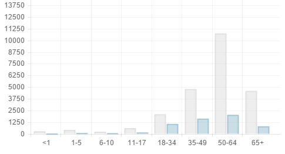

<ion-view cache-view="false" view-title="Why To Donate?">
	<ion-content class="padding">
		<div class="row margin-bottom-30">
			<div class="col">
				<h2 class="title">Organ Donor Statistics</h2>
			</div>
		</div>
		<div class="row margin-bottom-30">
			<p>
			A large metric to see how devastating of an impact organ failure has on humanity is the difference between the availability of organs compared to how many people need them.The graph below shows the mortality rate faced by people of various age groups compared to how many survived thanks to the various benovelent donors. 
			</p>
		</div>
		<div class="title">
			
		</div>
	</ion-content>
</ion-view>